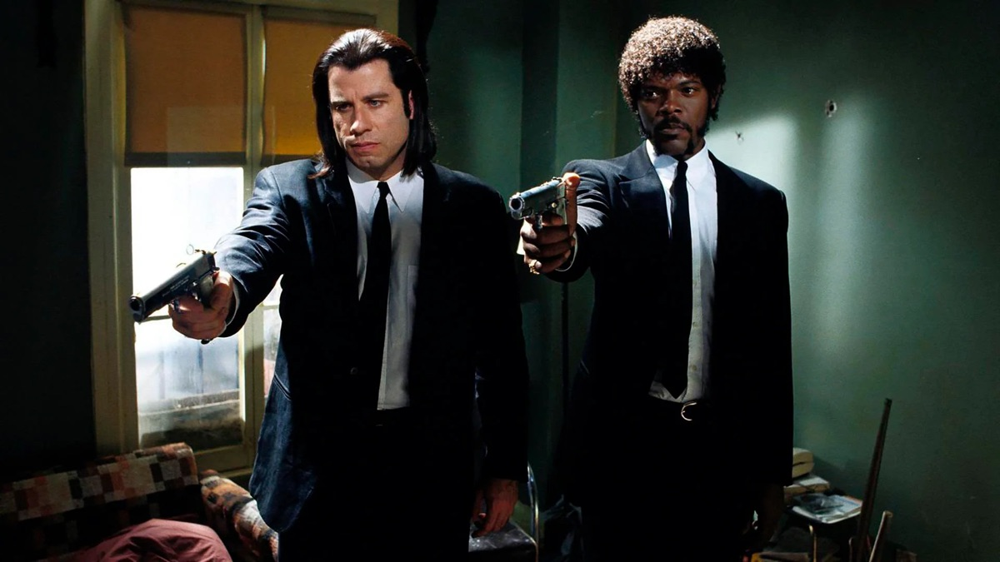
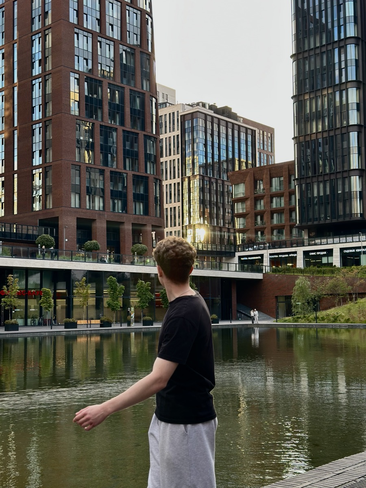

Фильм
Криминальное чтиво
Фильм Квентина Тарантино 1994 года.

Учусь в НИУ ВШЭ. Люблю программирование, спорт и музыку.
Работаю iOS-разработчиком в Яндекс Музыке. Фронтенд раньше не изучал - максимум писал HTML и CSS в школе, поэтому интересно познакомиться с вебом поближе.

Фильм
Фильм Квентина Тарантино 1994 года.
Спорт
Занимался футболом почти всю школьную жизнь: стал серебряным призёром первенства России и даже попал на просмотр в академию ЦСКА, но, к сожалению, не сложилось. Ещё люблю смотреть большой теннис и хотел бы попробовать поиграть сам.
Музыка
Kanye West, Drake, Future, Nemzzz, A$AP Rocky.
GitHub / KirillKrainov22
Мои последние публичные репозитории на GitHub. Здесь можно найти проект по названию или описанию.
Загрузка…